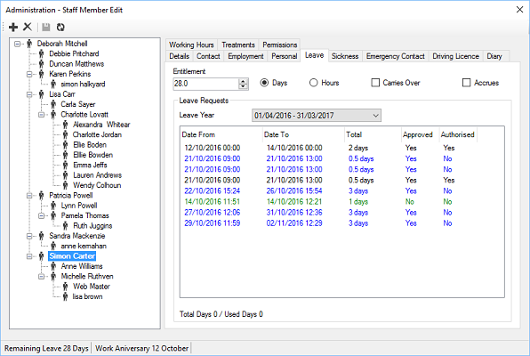

|
Leave/Holiday
|
Previous Top Next |
Stores Leave/Holiday entitlement and requests for staff members.

Entitlement - Staff
members leave entitlement.
Days - Signifies
that the entitlement is in days.
Hours - Signifies
that the entitlement is in hours.
Carries Over - If ticked, any
unused leave can be carried over to the next
leave year, if unused.
Accrues - If
ticked, the leave entitlement is accrued in line with the
staff members working hours.